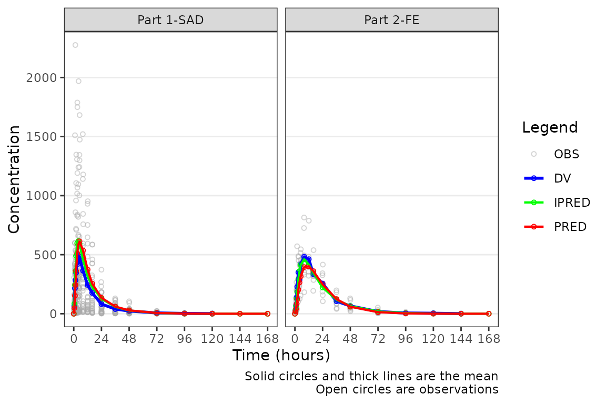
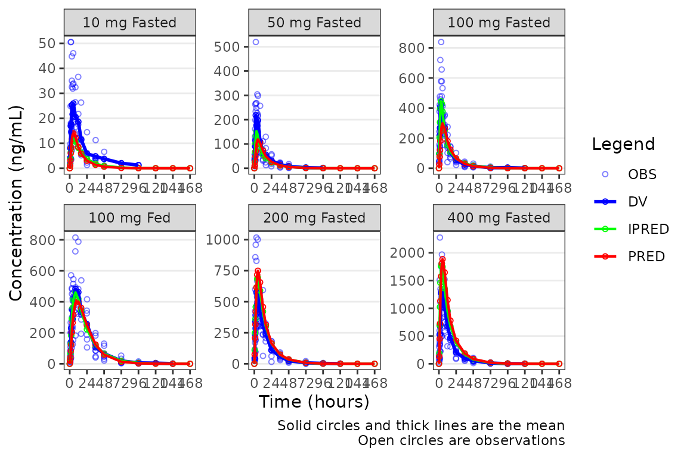
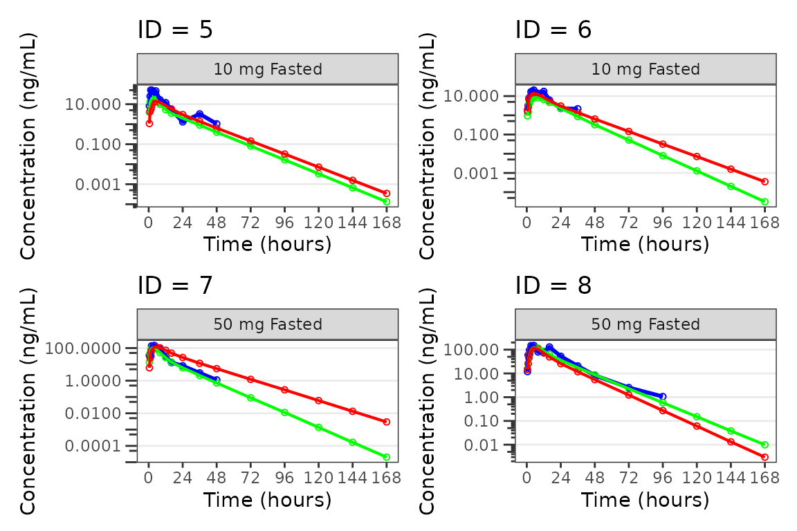

This vignette will demonstrate pmxhelpr functions for
generating standard model diagnostics.
First, we will load the required packages.
options(scipen = 999, rmarkdown.html_vignette.check_title = FALSE)
library(pmxhelpr)
library(dplyr, warn.conflicts = FALSE)
library(ggplot2, warn.conflicts = FALSE)
library(Hmisc, warn.conflicts = FALSE)
library(patchwork, warn.conflicts = FALSE)For this vignette, we will generate model diagnostics for a PK model
(model) fit to data_sad dataset using the
data_sad_pkfit dataset internal to pmxhelpr.
We can take a quick look at the dataset using glimpse()
from the dplyr package. Dataset definitions can also be viewed by
calling ?data_sad_pkfit, as one would to view the
documentation for a package function.
glimpse(data_sad_pkfit)
#> Rows: 720
#> Columns: 25
#> $ LINE <dbl> 1, 2, 3, 4, 5, 6, 7, 8, 9, 10, 11, 12, 13, 14, 15, 16, 17, 18,…
#> $ ID <dbl> 1, 1, 1, 1, 1, 1, 1, 1, 1, 1, 1, 1, 1, 1, 1, 1, 1, 1, 1, 1, 2,…
#> $ TIME <dbl> 0.00, 0.00, 0.48, 0.81, 1.49, 2.11, 3.05, 4.14, 5.14, 7.81, 12…
#> $ NTIME <dbl> 0.0, 0.0, 0.5, 1.0, 1.5, 2.0, 3.0, 4.0, 5.0, 8.0, 12.0, 16.0, …
#> $ NDAY <dbl> 1, 1, 1, 1, 1, 1, 1, 1, 1, 1, 1, 1, 2, 2, 3, 4, 5, 6, 7, 8, 1,…
#> $ DOSE <dbl> 10, 10, 10, 10, 10, 10, 10, 10, 10, 10, 10, 10, 10, 10, 10, 10…
#> $ AMT <dbl> NA, 10, NA, NA, NA, NA, NA, NA, NA, NA, NA, NA, NA, NA, NA, NA…
#> $ EVID <dbl> 0, 1, 0, 0, 0, 0, 0, 0, 0, 0, 0, 0, 0, 0, 0, 0, 0, 0, 0, 0, 0,…
#> $ ODV <dbl> NA, NA, NA, 2.02, 4.02, 3.50, 7.18, 9.31, 12.46, 13.43, 12.11,…
#> $ LDV <dbl> NA, NA, NA, 0.7031, 1.3913, 1.2528, 1.9713, 2.2311, 2.5225, 2.…
#> $ CMT <dbl> 2, 1, 2, 2, 2, 2, 2, 2, 2, 2, 2, 2, 2, 2, 2, 2, 2, 2, 2, 2, 2,…
#> $ MDV <dbl> 1, NA, 1, 0, 0, 0, 0, 0, 0, 0, 0, 0, 0, 0, 1, 1, 1, 1, 1, 1, 1…
#> $ BLQ <dbl> -1, NA, 1, 0, 0, 0, 0, 0, 0, 0, 0, 0, 0, 0, 1, 1, 1, 1, 1, 1, …
#> $ LLOQ <dbl> 1, NA, 1, 1, 1, 1, 1, 1, 1, 1, 1, 1, 1, 1, 1, 1, 1, 1, 1, 1, 1…
#> $ FOOD <dbl> 0, 0, 0, 0, 0, 0, 0, 0, 0, 0, 0, 0, 0, 0, 0, 0, 0, 0, 0, 0, 0,…
#> $ SEXF <dbl> 1, 1, 1, 1, 1, 1, 1, 1, 1, 1, 1, 1, 1, 1, 1, 1, 1, 1, 1, 1, 1,…
#> $ RACE <dbl> 2, 2, 2, 2, 2, 2, 2, 2, 2, 2, 2, 2, 2, 2, 2, 2, 2, 2, 2, 2, 1,…
#> $ AGEBL <int> 25, 25, 25, 25, 25, 25, 25, 25, 25, 25, 25, 25, 25, 25, 25, 25…
#> $ WTBL <dbl> 82.1, 82.1, 82.1, 82.1, 82.1, 82.1, 82.1, 82.1, 82.1, 82.1, 82…
#> $ SCRBL <dbl> 0.87, 0.87, 0.87, 0.87, 0.87, 0.87, 0.87, 0.87, 0.87, 0.87, 0.…
#> $ CRCLBL <dbl> 128, 128, 128, 128, 128, 128, 128, 128, 128, 128, 128, 128, 12…
#> $ USUBJID <chr> "STUDYNUM-SITENUM-1", "STUDYNUM-SITENUM-1", "STUDYNUM-SITENUM-…
#> $ PART <chr> "Part 1-SAD", "Part 1-SAD", "Part 1-SAD", "Part 1-SAD", "Part …
#> $ IPRED <dbl> 0.0000000000, 0.0000000000, 0.2399127105, 0.5809776251, 1.4434…
#> $ PRED <dbl> 0.0000000000, 0.0000000000, 1.0373644222, 2.4699025938, 5.8692…This dataset contains two additional variables relative to the
observed dataset used in model development (data_sad):
-
PRED: population model predicted values accounting only for fixed effects (THETAs) -
IPRED: individual model predicted values accounting for fixed effects (THETAs) and level 1 (inter-individual) random effects (ETAs)
Let’s add some additional derived character variables, which may be useful for plotting.
plot_data <- data_sad_pkfit %>%
mutate(FoodStatus = ifelse(FOOD == 0, "Fasted", "Fed"),
DoseGroup = paste0(DOSE, " mg ", FoodStatus),
DoseGroup = factor(DoseGroup, levels = c("10 mg Fasted", "50 mg Fasted", "100 mg Fasted", "100 mg Fed",
"200 mg Fasted", "400 mg Fasted")))Population Overlay Goodness of Fit Plots
Overview of plot_popgof
pmxhelpr includes a function for generating population
overlay goodness-of-fit (GOF) plots for model evaluation:
plot_popgof.
NOTE plot_popgof inherits dataset variable
handling functionality and arguments from
df_mrgsim_replicate.
Variable processing requires specification of two named lists of time and output variables:
-
time_vars: This argument provides a named vector of actual and nominal time variables.NTIMEmust be an exact binning variable.- Default is: c(
TIME="TIME",NTIME="NTIME").
- Default is: c(
-
output_varsThis argument provides a named vector of input (observations) and output (model prediction) variables.- Default is: c(
PRED="PRED",IPRED="IPRED",DV="DV").
- Default is: c(
The example dataset data_sad_pkfit only differs from
these defaults in the variable nname for the dependenrt variable,
"ODV". Thus, the most basic population GOF plot can be
obtained with:
plot_popgof(data = plot_data, output_vars = c(DV ="ODV")) +
facet_wrap(~PART)
The pooled analysis population includes multiple dose levels in a single plot, which is probably not optimal as a population PK model diagnostic. A better minimal plot representation of these data can be obtained by dose-normalizing and stratifying by study part to separate out the fast and food effect portions:
plot_popgof(data = plot_data, output_vars = c(DV ="ODV"), dosenorm = TRUE,
ylab = "Dose-normalized Conc. (ng/mL)") +
facet_wrap(~PART)Although, generally population goodness-of-fit plots are stratified by study design (extrinsic) factors (e.g., Dose and Food Status) in order to assess the adequacy of model fit in each unique study condition.
plot_popgof(data = plot_data, output_vars = c(DV ="ODV"),
ylab = "Concentration (ng/mL)") +
facet_wrap(~DoseGroup, scales = "free")NOTE plot_popgof plot aesthetic functionality
from plot_dvtime.
This vignette will assume familiarity with the Exploratory Data
Analysis Vignette and plot_dvtime. The arguments and
functionality inherited from plot_dvtime will not be
reviewed in detail here, except where critical to interpretation of
model diagnostics.
Plot Elements and Colors
There is only one new argument to plot_popgof that is
not present in df_mrgsim_replicate or
plot_dvtime. This argument is output_colors, a
named vector of pre-defined plot element and color pairs:
PRED= "red"-
IPRED="green", -
DV="blue". -
OBS="darkgrey"
The default plot elements are:
-
PRED- summary statistics for central tendency in the population model predictions (output_vars["PRED"]) -
IPRED= summary statistics for central tendency in the individual model predictions (output_vars["IPRED"]) -
OBS= observed data points for the dependent variable (output_vars["DV"]) -
DV= summary statistics for central tendency (+/- variability) in the dependent variable (output_vars["DV"])
OBS and DV represent the same data and both
map back to the variable in data specified in
output_vars["DV"]. They are differentiated only to allow
visual distinction between individual observation concentration data and
summary statistics of observed and model-predicted concentration
data.
If one wanted to clarify that all the data mapping back to the
dataset variable specified in output_vars["DV] with color,
then the default for output_colors["OBS"] can be updated to
to blue to align with DV.
plot_popgof(data = plot_data, output_vars = c(DV ="ODV"),
ylab = "Concentration (ng/mL)", output_colors = c(OBS = "blue")) +
facet_wrap(~DoseGroup, scales = "free")
Alternatively, the observed data points could be removed with only the summary metrics plotted. Notice how different this plot appears when only visualizing central tendency!
plot_popgof(data = plot_data, output_vars = c(DV ="ODV"),
ylab = "Concentration (ng/mL)", obs_dv = FALSE) +
facet_wrap(~DoseGroup, scales = "free")A better plot that still emphasizes central tendency, but includes some visualization of variability in the observed data, could also be obtained by specifying one of ““.
plot_popgof(data = plot_data, output_vars = c(DV ="ODV"),
ylab = "Concentration (ng/mL)", obs_dv = FALSE, cent = "median_iqr") +
facet_wrap(~DoseGroup, scales = "free")Specifying the Central Tendency
plot_popgof (and plot_dvtime) uses the
stat_summary function from ggplot2 to
calculate and plot the central tendency measures and error bars. The
summary statistics calculated are specified by the cent
argument. Options include:
-
"mean"= arithmetic mean (linear y-axis), geometric mean (log y-axis) -
"median"= median (50th percentile) -
"mean_sdl"= arithmetic mean +/- arithmetic SD (linear y-axis), geometric mean +/- geometric SC (log y-axis) -
"median_iqr"= median +/- interquartile range (25th to 75th percentiles)
Variability statistics (SD, IQR) are plotted for the observed data when requested and only the central tendency measures are calculated and returned for model predictions (PRED, IPRED).
An often overlooked feature of stat_summary, is that it
calculates the summary statistics after any transformations to
the data performed by changing the scales. This means that when
scale_y_log10() is applied to the plot, the data are
log-transformed for plotting and the central tendency measure returned
with "mean" is the geometric mean.
If the log_y argument is used to generate semi-log plots
along with show_captions = TRUE, then the caption will
delineate where arithmetic and geometric means are being returned.
On the linear scale, the "mean_sdl" option produces
unrealistic error bars that cross zero given the small sample size,
variability, and log-normal distribution of concentration-time data.
plot_popgof(data = plot_data, output_vars = c(DV ="ODV"), cent = "mean_sdl" ,
ylab = "Concentration (ng/mL)", log_y = FALSE) +
facet_wrap(~DoseGroup, scales = "free")However, when transformed to a semi-log scale with
log_y = TRUE, the error bars now reflect the geometric
standard deviation and are displayed correctly for lognormally
distributed data and the caption updates to reflect this.
plot_popgof(data = plot_data, output_vars = c(DV ="ODV"), cent = "mean_sdl",
ylab = "Concentration (ng/mL)", log_y = TRUE) +
facet_wrap(~DoseGroup, scales = "free")The caption will NOT update if a new axis is added to the
plot object outside of plot_popgof with
scale_y_log10.
plot_popgof(data = plot_data, output_vars = c(DV ="ODV"), cent = "mean_sdl",
ylab = "Concentration (ng/mL)") +
facet_wrap(~DoseGroup, scales = "free") +
scale_y_log10()Transformation of the plot to a semi-log scale (log-scale y-axis
only) is recommended to be performed using the log_y
argument for the following benefits:
- Includes log tick marks on the y-axis
- Updates the caption with the correct central tendency measure if
show_captions = TRUE.
Defining imputations for BLQ data
There are some potential missfit in the model in the late terminal
phase, with the observed geometric mean values skewing higher than the
corresponding model predictions, particularly at lower doses. Is this
real? Let’s use imputation to assess the potential impact of the data
missing due to assay sensitivity on assessment of model
misspecification. The loq_method argument from
plot_dvtime was extended in plot_popgof to
also include model predictions.
Options are:
-
0: No handling. Plot input datasetDVvsTIMEas is. (default) -
1: Impute all BLQ data atTIME<= 0 to 0 and all BLQ data atTIME> 0 to 1/2 xloq. Useful for plotting concentration-time data with some data BLQ on the linear scale -
2: Impute all BLQ data atTIME<= 0 to 1/2 xloqand all BLQ data atTIME> 0 to 1/2 xloq.
The loq argument species the value of the LLOQ. The
loq argument must be specified when loq_method
is 1 or 2, but can be NULL
if the variable LLOQ is present in the
dataset.
Let’s take a look at our data stratified by dosing regimen. In
general, it is good practice to use loq_method = 1 for
linear scale plots and loq_method = 2 for log-scale plots,
in which zero is not a valid value.
plot_popgof(data = plot_data, output_vars = c(DV ="ODV"), cent = "mean", grp_dv = TRUE,
ylab = "Concentration (ng/mL)", log_y = TRUE, loq_method = 2) +
facet_wrap(~DoseGroup, scales = "free")
Interesting! It looks like the potential misspecification in the late terminal phase was in fact an artifact in the observed profile due to censoring of data below the LLOQ. This is a common finding in SAD studies and is usually dose dependent and more apparent at lower doses where a larger proportion of samples will be BLQ.
Individual Concentration-time plots
The previous section provides an overview of how to generate
population overlay GOF plots using plot_popgof; however, we
can also use plot_popgof to generate subject-level
visualizations with a little pre-processing of the input dataset.
We can plot an individual subject by filtering the input dataset.
This could be extended generate plots for all individuals using
for loops, lapply, purrr::map()
functions, or other methods.
ids <- sort(unique(plot_data$ID)) #vector of unique subject ids
n_ids <- length(ids) #count of unique subject ids
plots_per_pg <- 4
n_pgs <- ceiling(n_ids/plots_per_pg) #Total number of pages needed
plist<- list()
for(i in 1:n_ids){
plist[[i]] <- plot_popgof(filter(plot_data, ID == ids[i]),
output_vars = c(DV = "ODV"),
ylab = "Concentration (ng/mL)",
log_y = TRUE,
grp_dv = TRUE,
show_caption = FALSE) +
facet_wrap(~DoseGroup)+
labs(title = paste0("ID = ", ids[i]))+
theme(legend.position="none")
}
lapply(1:n_pgs, function(n_pg) {
i <- (n_pg-1)*plots_per_pg+1
j <- n_pg*plots_per_pg
wrap_plots(plist[i:j])
})
#> [[1]]#>
#> [[2]]
#>
#> [[3]]#>
#> [[4]]#>
#> [[5]]#>
#> [[6]]#>
#> [[7]]#>
#> [[8]]#>
#> [[9]]